Final Project by Larry Kyrala for
CS 175: Introduction to Computer Graphics
Professor: Hanspeter Pfister
Harvard University
Fall 2010
Snowflake
a snowflake simulator
Description
What exactly are you planning to implement? What is the
basic functionality of your application? Which extensions will you consider?
Be as specific as possible. Bullets are fine — you should order the
features of your program in terms of importance (most important
feature first, etc.)
Kenneth Libbrecht at CalTech has done some amazing research on the physics
of snowflake formation. The image to the left links to an animated gif showing
time-lapse photography of a lab-grown snowlake.
Since viewing the formation of snowflakes in the wild isn't possible currently,
I thought an interesting graphics project would be to simulate the growth of
snowflakes as they fall.
Controls
keys:
ESC - quit
0 zero - cycle through 5 "real life" snowflakes
1-5 - various procedural generators. (described in html)
1 - 'flower' generator.
2 - 'mosaic' generator.
3 - 'lineart' generator.
4 - 'outside-in (sushi-roll) lineart' generator
5 - 'random barycentric triple' generator
R - reset generator
A - 'auto' camera; smooth rotation around snowflake
[] square brackets - adjust polarization
<> angle brackets - adjust spectrum bias for polarization
-= minus/equals - adjust thickness of interface/refraction factor
mouse:
LEFT MOUSE DRAG - rotate the camera
RIGHT MOUSE DRAG - rotate the snowflake
MOUSE WHEEL - zoom in/out on snowflake
Features
- camera is centered on the snowflake's frame as it forms.

- pressing number keys allow the viewer to switch between generators and real-life snowflakes
(from SnowCrystals.com)--
generated snowflakes are random on two parameters and are different each time they are
regenerated. There are 5 different generators with varying levels of randomization (no two are the same -- mostly!):
- 'flower' - the basis for this generator are rects of sine modulated size that sweep outwards.
the effect is like a colorful flower.
- 'mosaic' - this also uses sweeping rects, however this time the radial position is
modulated so that a mosaic is formed.
- 'lineart' - this uses two lines of adjacent symmetry which are then connected each to the
midpoint of the other as they expand radially. The connection idea was derived from
patterns common in peg-based lineart.
- 'outside-in (sushi-roll) lineart' - similar to 'lineart', this reuses the modulated
radial expansion in reverse, drawing outside in, and creating fractal like hubs.
- 'random barycentric triple' - taking two lines of adjacent symmetry as basis vectors,
3 additional points are constructed using barycentric coordinates. Since the additional points
are random points within the radially expanding triangle, this produces different and more
complex patterns than 'lineart'.
- "thin-film"/polarized light shading effects -- Rotating the snowflake with respect to the
light source produces effects characteristic of thin films. Libbrecht finds that using a color filter (polarized light) (see the section on
"Illumination Techniques")
brings out the best contrast in
his photos. This is a form of thin-film interference
as the surfaces of the snowflake are accented by the polarized filter
(see nvidia's thinfilm shader or
photographs of real crystals via polarized light microscopy).
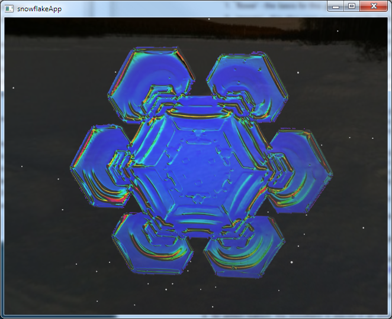
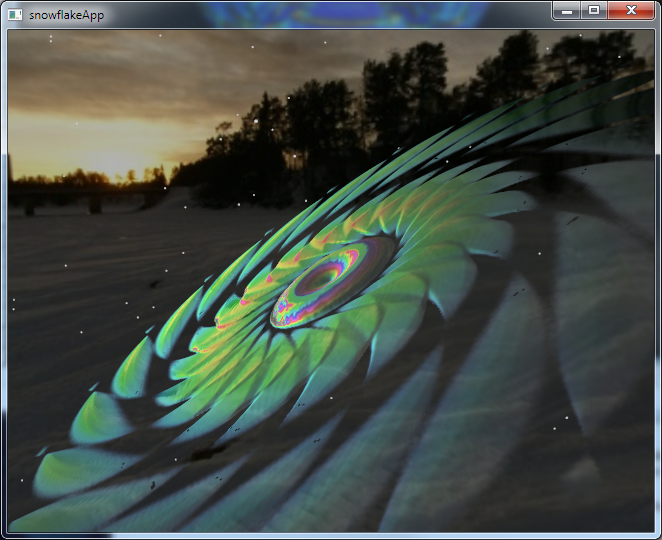
-

generative growth simulation --
Libbrecht describes the physics of snowflake formation based on diffusion
dynamics within environmental parameters of temperature and humidity. Using
the physics to approximate growth is a difficult problem and still not well
understood [Libbrecht, Kim]. Unfortunately I was not able to get my diffusion
simulation working in the time alloted, so I included a sampling of
"real-life" snowflake textures derived from Libbrecht's galleries (see Media and references
below).
I was able to implement several procedural generators using up to three
random parameters. This randomness allows successive runs of the generators to
produce unique flakes. These generators are artistic -- they don't follow ice symmetry or
hold to realistic physical concepts of crystal formation.
I've made some simplifying assumptions in designing the generators:
- I use an accumlution buffer (2d texture) to store the integration.
- the 2d texture is then translated into geometry via a vertex shader.
- for added realism, the snowflake is placed in
an environment built from this skybox:

- I've also added a snowflake particle system for
background effect.
- (not implemented) if there are distant lights, such as the sun, a snow halo and/or bloom effect (GLSL?)
would be nice. 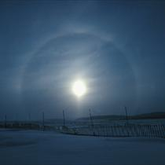
Implementation
Original Storyboard and Concept
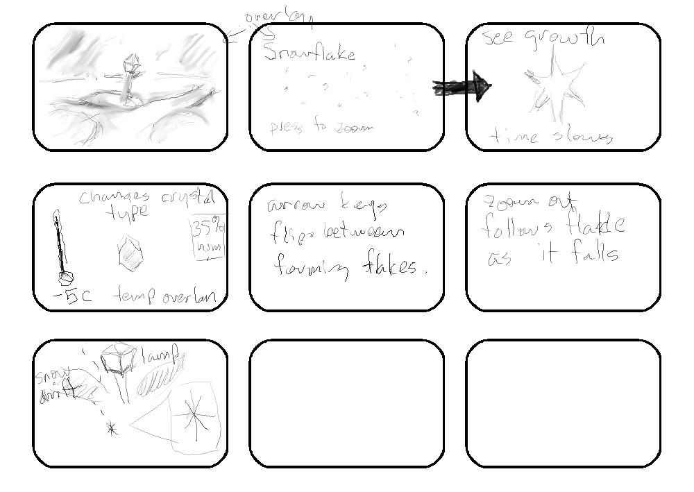
Frames:
- (not implemented) The scene starts out with a lone lamp at a country path with snow drifts (the scene
is surrounded with an environment map like the one above).
- Overlayed on this is a 3D partical system of snow falling at normal speed
(sprites or fuzzy points) and (not implemented) title graphics
- (partially implemented) pressing a key focuses on a single point and time slows to microseconds so you can
see the flake form from the point... the background is a diffuse gradient blend in order
to see the polarization effects.
- (implemented as 3 random params, but no controls) also available are
temperature and humidity controls. varying these has an effect on
what kind of flakes form, or the formation of existing flakes.
- (different controls) arrow keys flip to another (new) flake, leaving the old one.
- (not implemnted) user can also zoom out and see the flake fall to the ground, then hold on a
long shot until the next flake zoom.
Image References:
OBJ file (courtesy of my sister Andrea who is an animator)
- 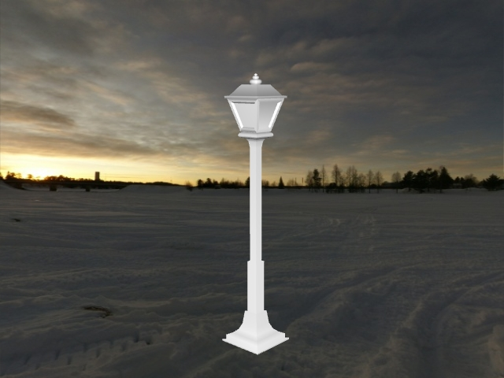
(not implemented) This would need to be textured and placed in the scene.
Code
About the FBO textures
All snowflake generators are shapes rendered into an offscreen frame buffer object
in GL_BLEND mode, and as such they accumulate any primatives rendered to the surface.
Because the accumulated buffer is interpreted as a heightfield, these shapes also have
depth.
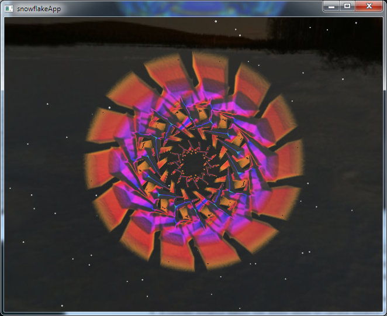
The generators have a prebuilt limit on the number of frames they are allowed to
"grow". This is normalized in frame time to a range from 0 - 1.0 which then is used
to define the radius of growth at a given frame time. This radius may then be multiplied
times any of the random parameters, modulated, or otherwise transformed. In addition,
a random number for the symmetry is chosen and any frame draw operations are rotated and
repeated along these lines to produce a symmetrical effect.
I attempted another kind of generator using a Laplacian convolution filter
(edge detection filter) under the idea that recursive applications of this filter
would "grow" the edge of the snowflake. Indeed, I found out later that Laplacians
are involved in actual diffusion physics, so this might have been a good
approximation. I was planning to use this in combination with a hexagonal bias
(like a lens flare) to encourage growth along symmetry lines. Although there are many
examples of GLSL convolution filters, I couldn't get the shader to work in my specific
context in time. Something for the future.
About the GLSL snowflake shader
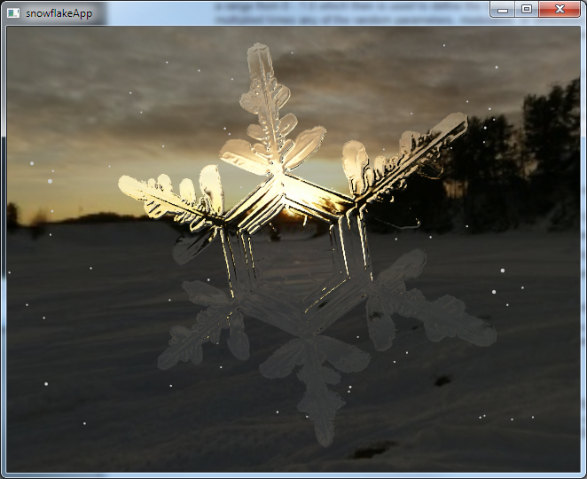
The snowflake GLSL shader does a combination of interesting things to achieve
its effect.
- thickness is obtained from a greyscale frame buffer object (FBO) generated heightmap.
- thickenss is used for both the refraction effect and the thinfilm specular component.
- the "eta" (n1/n2) ratios for the index of refraction vary from 0.76 (ice) to 0.96 (almost air)
based on the thickness.
- the refracted cubemap texel is blended with a non-refracted cubemap texel for thickness
levels below a certain range... this cuts down on edge aliasing and gives a smoother image.
- the shader discards anywhere thickness = 0, this "cuts out" the
snowflake from the square texture plate.
- a contrast enhance feature was added based on camera distance. far away, the flake is
darkened a little and the surroundings are brightened a little. zooming in, this is reversed
so that you can see the flake in better detail.
About the background snow flurry particle system
Snow particles use GL_POINTS along with the linear + exponential ATTENUATION parameter to generate
larger points closer to the camera and smaller dots farther away. The particles have a downward
impulse so they fall, and a xz impulse from a
Perlin noise texture to
simulate drifts and
turbulence. I got the Perlin noise idea from Robert Hodgins particle system sample in the
Cinder SDK. It's a simple precached way of generating psuedo turblence without CFDs.
About the controls and UI paradigm
The mouse controls for the camera rotation and object rotation are what I call a "ball on
paper" model of interaction. Imagine a ball that has a center fixed in space that can rotate
but not move. Now imagine that this ball rests on a sheet of paper on a desk. Moving your
mouse on the screen (x,y) with a button down is akin to moving the paper. Moving the paper
would rotate the ball about it's center.
This has a couple advantages over other approaches, such as "trackball" quaternion
controls or raw euler angles:
- unlike "trackball" controls, it is possible to return exactly to a given orientation by
simply returning to the same spot... this isn't possible in RenderMonkey or many other
"trackball" implementations, which are very difficult to rotate and keep level at the
same time.
- the "sheet of paper" is infinite, meaning that you can click, drag, release, and click again.
This allows a long rotation to be broken up into smaller click-drag events, while still
keeping an intuitive continuity.
- although euler angles are used in the implementation of this control system,
the system itself avoids the common problem of gimbal lock by always maintaining a clean
mapping between x and y accumulators. In the case of object rotation, the y axis rotation may
not always be respective to the screen, but I thought this was a small price to pay for
the overall consistency and simplicity of this approach.
Media
The "real-life" snowflakes were produced via the following process using GIMP:
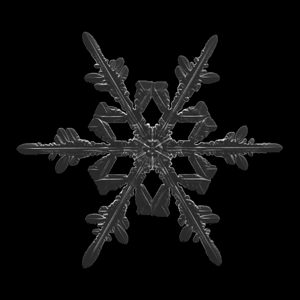
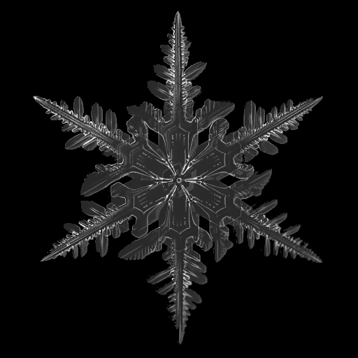
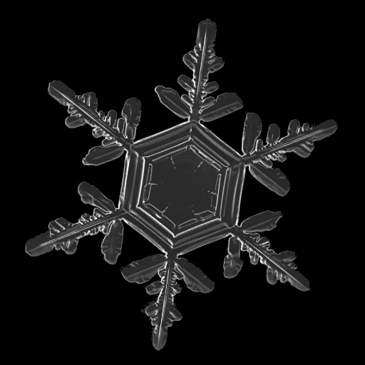
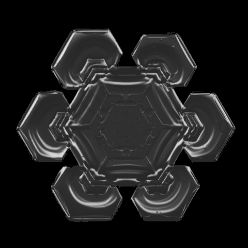
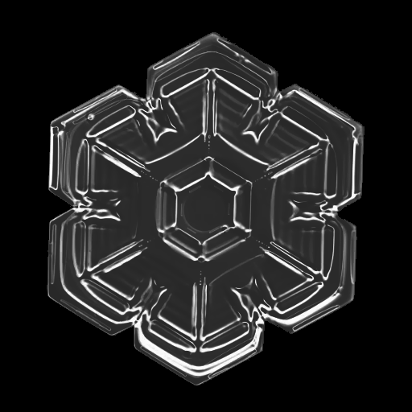
- stock image selected from Libbrecht's collection
- resize to 512x512
- created a mask layer
- desaturate: lightness
- color: invert
- levels: gamma = 0.35
- brightness: +40
- selective gaussian blur: 5.0 radius, 5 max delta.
Experience
Your level of experience or knowledge of the application area and
the type of development / languages / toolkits you think will be
required. Add a description of the responsibilities of each team
member (or add their name to each feature bullet).
- Experience:
- veteran multimedia systems and application programmer. (C++/Win32)
- Target platform:
- Windows 7 VS2010 C++ 32/64 bit
- Libraries:
-
- Cinder C++ - a C++ library for creative coding; provides a lot of the
"plumbing" needed for a typical OpenGL project. More modern than GLUT; cross platform
support.
- For other media and asset licenses please see the included
README.txt file.
- Also I reused concepts and code from our homeworks.
- This is a solo project because I'm an extension student.
- The features are laid out such that if I can't do one thing, I can fallback to
another... so the scope of this can expand or contract as needed.
References
Kim, Theodore, Micheal Henson, and Ming C. Lin.
"A Hybrid Algorithm for Modeling Ice Formation."
.
28 Nov. 2010.
<http://gamma.cs.unc.edu/HYBICE/>.
Libbrecht, Kenneth.
SnowCrystals.com.
28 Oct. 2010.
<http://www.its.caltech.edu/~atomic/snowcrystals/>.
---.
"The physics of snow crystals."
Reports on Progress in Physics.
68 (2005) 855-895.
<http://www.its.caltech.edu/~atomic/publist/rpp5_4_R03.pdf>.
Wikipedia contributors, 'Procedural modeling', Wikipedia, The Free Encyclopedia, 4 August 2010, 01:29 UTC, <http://en.wikipedia.org/w/index.php?title=Procedural_modeling&oldid=377040651> [accessed 28 October 2010]
---, 'Thin-film interference', Wikipedia, The Free Encyclopedia, 29 September 2010, 02:33 UTC, <http://en.wikipedia.org/w/index.php?title=Thin-film_interference&oldid=387652589> [accessed 28 October 2010]